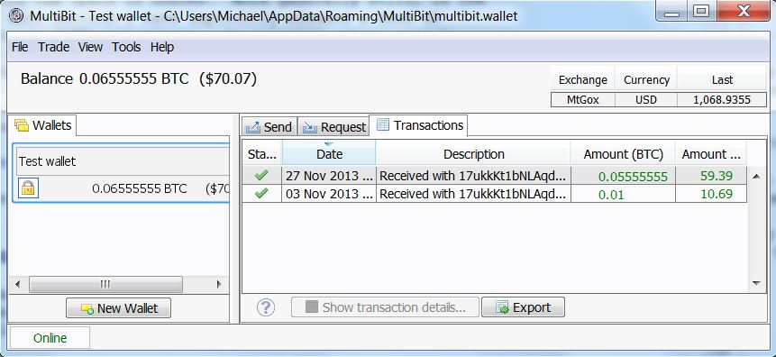
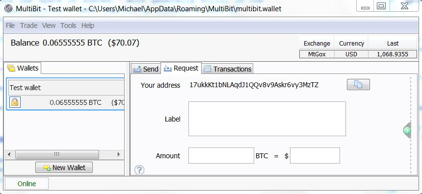

различных значений х, прежде чем он найдет подходящий простой номер. Это довольно сложная задача, требующая большой вычислительной мощности.
различных значений х, прежде чем он найдет подходящий простой номер. Это довольно сложная задача, требующая большой вычислительной мощности.Замечательное объяснение принципов работы сети Bitcoin. Много текста, немного картинок.
Много тысяч статей было написано для того, чтобы объяснить Биткоин — онлайн, одноранговую (p2p) валюту. Большинство из этих статей поверхностно рассказывают суть криптографического протокола, опуская многие детали. Даже те статьи, которые «копают» глубже, часто замалчивают важные моменты. Моя цель в этой публикации — объяснить основные идеи, лежащие в протоколе Биткоин в ясной, легкодоступной форме. Мы начнем с простых принципов, далее пойдем к широкому теоретическому пониманию, как работает протокол, а затем копнем глубже, рассматривая сырые (raw) данные в транзакции Биткоин.
Достаточно сложно понять работу протокола в деталях. Намного проще вместо этого принять Биткоин как данность и участвовать в спекуляциях о том, как разбогатеть с помощью Биткоин, является ли Биткоин пузырем, может ли Биткоин в один прекрасный день уничтожить обязательное налогообложение, и так далее. Это все весело, но существенно ограничивает ваше понимание. Понимание деталей протокола Биткоин открывает недоступные перспективы. В частности, это основа для понимания встроенного языка сценариев (скриптовый язык программирования) Биткоин, который делает возможным использование Биткоин для создания новых видов финансовых инструментов, таких как умные контракты (1 2). Новые финансовые инструменты могут, в свою очередь, быть использованы для создания новых рынков и получения новых форм коллективного поведения человека.
Я опишу такие концепции, как контракты, в следующих публикациях. Эта публикация концентрируется на объяснении внутренности протокола Биткоин. Чтобы понять меня, вы должны быть знакомы с идеей публичного криптоключа, и с тесно связанной идей о цифровой подписи. Я также предполагаю, что вы знакомы с криптографической хэш-функцией (изменение вводных данных всего на один бит кардинально меняет хэш-сумму, прим. пер.). Ничто из этого не представляет большой сложности. Основные идеи можно получить из программ первого курса по математике в университете или классов по компьютерной информатике. Идеи красивы, так что если вы не знакомы с ними, я рекомендую потратить несколько часов, чтобы ознакомиться.
Это может показаться удивительным, что основой Биткоин является криптография. Разве Биткоин не валюта, не способ отправки секретных сообщений? На самом деле, проблемы, которые должен решать Биткоин, касаются в основном обеспечения безопасности сделок – быть уверенным, что люди не могут красть друг у друга, или выдавать себя за друг друга, и так далее. В мире атомов мы достигаем такой безопасности с помощью таких устройств, как замки, сейфы, подписи и банковские хранилища. В мире битов мы достигаем такого рода безопасности с помощью криптографии. И вот почему Биткоин в душе — криптографический протокол.
Стратегия, которую я буду использовать в моей публикации, предполагает создание Биткоин поэтапно. Я начну с объяснения очень простой цифровой валюты, основанной на идеях, которые практически очевидны. Мы назовем эту валюту Инфокоин, чтобы отличить ее от Биткоин. Конечно, наша первая версия Инфокоин будет иметь много недостатков, и поэтому мы будем проходить через несколько итераций Инфокоин, с каждой новой итерацией будем вводить только одну или две простые новые идеи. После нескольких таких итераций мы придём к полному протоколу Биткоин. Мы заново откроем Биткоин!
Эта стратегия работает медленнее, чем если бы я объяснил работу всего протокола Биткоин залпом. Даже если вы можете понять механику Биткоин через такое залповое объяснения, будет трудно понять, почему Биткоин спроектирован таким вот образом. Преимущество медленного, итерационного объяснения в том, что это дает нам гораздо более четкое понимание каждого элемента Биткоин.
Наконец, я должен упомянуть, что я новичок в Биткоин. Я наблюдаю за ним с 2011 года (и за криптовалютами с конца 1990-х годов), но серьёзно вник в детали протокола Биткоин только в начале этого года. Так что буду благодарен за исправления любых заблуждений с моей стороны. Кроме того, я в своем материале включил ряд «проблем для автора», — заметки для себя о вопросах, которые возникли у меня во время написания. Вы можете найти их интересными, но вы также можете пропустить их полностью, не теряя основного текста.
Первые шаги: подписан протокол о намерениях
Так как мы можем спроектировать цифровую валюту?
На первый взгляд, цифровая валюта кажется чем-то невозможным. Представим себе человека — назовем ее Алиса – она имеет некоторые цифровые деньги, которые она хочет потратить. Если Алиса может использовать строку битов в качестве денег, как мы можем помешать ей использовать одну и ту же строку битов снова и снова, таким образом, создав неограниченное количество денег? Или, если мы можем как-то решить эту проблему, как мы можем предотвратить подделывания такой строки битов и использование ее для кражи у Алисы?
Это лишь две из многих проблем, которые должны быть преодолены, чтобы использовать информацию в качестве денег.
В первой версии Инфокоин давайте найдем способ, чтобы Алиса могла использовать строку битов в (очень примитивной и неполной) форме денег, но таким образом, чтоб у нее была хоть какая-то защита от подделки. Предположим, Алиса хочет дать другому человеку, назовем его Боб, один инфокоин. Чтобы сделать это, Алиса записывает сообщение «Я, Алиса, даю Бобу один инфокоин». Затем она подписывает в цифровом формате сообщение с использованием закрытого ключа шифрования (криптоключ), и заявляет о подписанной строке битов всему миру.
(Кстати, я использую «Инфокоин» с большой буквы для обозначения протокола и общей концепции, и «инфокоин» с маленькой буквы для обозначения конкретного денежного знака. Подобная практика является обычным явлением, хотя и не всеобщей, в мире Биткоин.)
Такой прототип цифровой валюты вас не очень впечатлит! Но у него есть некоторые достоинства. Любой человек в мире (в том числе и Боб) может использовать открытый ключ Алисы для проверки, что Алиса на самом деле была человеком, который подписал сообщение «Я, Алиса, даю Бобу один инфокоин». Никто другой не смог бы создать эту строку битов, а значит Алиса не может повернуться и сказать: «Нет, я вовсе не имела в виду, что хочу отдать Бобу один инфокоин». Таким образом, протокол устанавливает, что Алиса действительно намерена дать Бобу один инфокоин. Такой же факт — никто не смог бы составить такое подписанное сообщение — дает Алисе некоторую ограниченную защиту от подделки. Конечно, после того, как Алиса опубликовала свое сообщение, существует возможность дублировать ее сообщение другими людьми, так что в некотором смысле подделка возможна. Но это не возможно с нуля. Эти два свойства — установление намерения со стороны Алисы и ограниченная защита от подделки – действительно примечательные особенности этого протокола.
Я (совсем) не сказал о том, что, собственно, есть цифровые деньги. Объясняю: это просто само сообщение, т. е. последовательность битов, а точней, подписанное цифровой подписью сообщение: «Я, Алиса, даю Бобу один инфокоин». В будущем протоколы будут похожи в том, что все наши формы цифровых денег будут просто более содержательными сообщениями.
Использование серийных номеров с целью обозначить монеты
Проблема с первой версией Инфокоин в том, что Алиса может продолжать посылать Бобу то же подписанное сообщение снова и снова. Предположим, Боб получает десять копий подписанного сообщения «Я, Алиса, даю Бобу один инфокоин». Означает ли это, что Алиса послала Бобу десять различных инфокоинов? Было ли ее послание случайно дублированным? Возможно, она пыталась обмануть Боба, притворяясь, что она дала ему десять различных ифнокоинов, в то время как сообщение лишь доказывает всему миру, что она намерена передать один инфокоин.
Чего бы нам хотелось, так это найти способ сделать инфокоины уникальными. Они нуждаются в лейбле или серийном номере. Алиса подпишет сообщение «Я, Алиса, даю Бобу один инфокоин, с серийным номером 8740348». Потом, позже, Алиса может подписать сообщение «Я, Алиса, даю Бобу один инфокоин, с серийным номером 8770431», и Боб (и все остальные) будет знать, что другой инфокоин был передан.
Чтобы эта схема работала, нам нужен надежный источник серийных номеров для инфокоинов. Один из способов создания такого источника является открытие банка. Этот банк будет предоставлять серийные номера для инфокоинов, отслеживать, кто имеет какие инфокоины, и проверять, что сделки действительно являются легитимными.
Более конкретно, давайте предположим, что Алиса приходит в банк и говорит: «Я хочу снять (withdraw) один инфокоин с моего счета». Банк уменьшает ее баланс счета на один инфокоин, и присваивает ему новый, никогда ранее не используемый серийный номер, скажем 1234567. Затем, когда Алиса хочет передать ее инфокоин Бобу, она подписывает сообщение «Я, Алиса, даю Бобу один инфокоин с порядковым номером 1234567». Но Боб не просто принимает инфокоин. Вместо этого, он вступает в контакт с банком, и проверяет, что: (а) инфокоин с этим серийным номером принадлежит Алисе; и (б) Алиса еще не потратила этот инфокоин. Если условия верны, то Боб информирует банк о том, что он хочет принять этот инфокоин, и банк обновляет свои записи, чтобы отображать, что инфокоин с этим серийным номером в настоящее время в распоряжении Боба и больше не принадлежит Алисе.
Создавать банк совместными усилиями
Это последнее решение выглядит довольно перспективным. Тем не менее, оказывается, что мы можем сделать что-то гораздо более амбициозное. Мы можем полностью исключить банк из протокола. Это значительно меняет характер валюты. Это означает, что больше нет единой организации, отвечающий за валюту. И если вы представите об огромной власти в руках центрального банка — контроль над денежной массой — это довольно серьезное изменение.
Идея состоит в том, чтобы каждый (в совокупности) был банком. В частности, мы допустим, что все пользователи Инфокоин хранят полную запись о том, кому инфокоины принадлежат. Вы можете представить это как открытую общую книгу учета с указанием всех операций Инфокоин. Мы назовём эту книгу «цепочка блоков» (blockchain), именно так в Биткоин и называется публичная запись всех транзакций.
Теперь предположим, что Алиса хочет передать инфокоин Бобу. Она подписывает сообщение «Я, Алиса, даю Бобу один инфокоин с порядковым номером 1234567», и отправляет подписанное сообщение Бобу. Боб может использовать свою копию цепочки блоков, чтобы проверить, действительно ли инфокоин принадлежит Алисе. Если это проверяется, то потом он посылает одновременно сообщение Алисы и свок сообщение о принятии сделки по всей сети и все обновляют свои копии цепочки блоков.
У нас еще есть проблема «откуда берется серийный номер», но это, оказывается, довольно легко решить, и поэтому я отложу ее на потом, когда будем обсуждать Биткоин. Более сложной проблемой является то, что этот протокол позволяет Алисе обманывать через повторное расходование (double spending) ее инфокоинов. Она отправляет подписанное сообщение «Я, Алиса, даю Бобу один инфокоин с порядковым номером 1234567» Бобу, и сообщение «Я, Алиса, даю Чарли один инфокоин, с [тем же] серийный номером 1234567» Чарли. Оба, Боб и Чарли, используют свою копию цепочки блоков для проверки того, что инфокоин принадлежит Алисе. При условии, что они делают эту проверку в то-же самое время (до того, как они имели возможность услышать друг от друга), оба увидят, что да, цепочка блоков показывает принадлежность монеты Алисе. Итак, они оба принимают перевод и также вместе транслируют информацию о принятие сделки. Вот теперь мы имеем проблему. Как другие люди должны обновлять свои цепочки блоков? Может быть не так уж просто найти способ получения согласующей общей книги транзакций. И даже если все могут согласиться на постоянной основе обновлять свои цепочки блоков, есть еще одна проблема, что Боб или Чарли могут быть обманутыми.
На первый взгляд повторное расходование выглядит трудным для Алисы в реализации. В конце концов, если Алиса посылает сообщение сначала Бобу, то Боб может проверить сообщение, и рассказать всем остальные в сети (в том числе Чарли), чтобы они обновили свои цепочки блоков. Как только это произошло, Чарли уже не сможет быть одураченным Алисой. Так что, скорее всего, только в коротком промежутке времени Алиса может делать повторные расходования. Тем не менее, очевидно, любой такой промежуток времени нежелателен. Хуже того, существуют методы, благодаря которым Алиса может сделать этот период дольше. Она может, например, использовать анализ сетевого трафика, чтобы найти время, когда Боб и Чарли имеют много задержек в связи. Или, возможно, она может что-то сделать, чтобы сознательно сорвать их связь. Если она может замедлить связь даже на малость, то это позволит упростить ей задачу с повторным расходованием.
Как мы можем решить проблему двойных расходов? Очевидным решением будет, что, когда Алиса посылает Бобу один инфокоин, Боб не должен пытаться проверить сделку в одиночку. Скорее всего, он должен транслировать о возможной сделки всем пользователям сети Инфокоин, и попросить их помочь ему определить, является ли сделка легитимной. Если они все вместе решат, что сделка в порядке, то Боб может принять этот инфокоин, и все обновят свои цепочки блоков. Этот тип протокола может помочь предотвратить проблему двойных расходов, так как, если Алиса попытается потратить ее инфокоин вместе с Бобом и Чарли, другие люди в сети заметят, и пользователи сети скажут Боб и Чарли, что есть проблема с транзакцией, и сделка не должна быть осуществлена.
Более подробно, давайте предположим, что Алиса хочет дать Бобу один инфокоин. Как и прежде, она подписывает сообщение «Я, Алиса, даю Бобу один инфокоин с порядковым номером 1234567», и дает подписанное сообщение Бобу. Так же, как и прежде, Боб делает проверку работоспособности, используя его копию цепочки блоков, чтобы проверить действительно ли монета в настоящее время принадлежит Алисе. Но в этот момент протокол изменен. Боб не просто идет вперед и принимает сделку. Вместо этого, он передает сообщение Алисы всей сети. Другие члены сети проверяют, имеет ли Алиса этот инфокоин. Если это так, они передают сообщение «Да, Алиса владеет инфокоином 1234567, теперь он может быть передан Бобу». Как только достаточное количество людей распространят этот послание в сети, все обновят свои цепочки блоков, которые будут показывать, что инфокоин 1234567 теперь принадлежит Бобу, и сделка завершена.
Этот протокол имеет много неточных элементов в настоящее время. Например, что значит сказать «достаточное количество людей должны транслировать это сообщение»? Что значит «достаточно»? Это не может означать всех в сети, так как мы априори не знаем, кто находится в сети Инфокоин. По той же причине, это не может означать некоторую фиксированную долю пользователей в сети. Мы не будем пытаться разобраться в этом прямо сейчас. Вместо этого, в следующем разделе я буду указывать серьезные проблемы в подходе, который мы описали. Обращая внимание на эту проблему, мы будем иметь приятный побочный эффект от создания идей выше более понятными.
Доказательство работы
Предположим, Алиса хочет повторно потратить в протоколе, который я только что описал. Она может сделать это, взяв на себя контроль сети Инфокоин. Давайте предположим, что она использует автоматизированную систему для настройки большого количества отдельных идентичностей (пользователей), скажем, миллиард, в сети Инфокоин. Как и прежде, она пытается дважды оплатить тот же самым инфокоин Бобу и Чарли. Но когда Боб и Чарли попросят сеть проверить сделки, дополнительные пользователи Алисы завалят сеть, объявив Бобу, что они подтвердили его сделку, и Чарли, что они подтвердили его сделку, обманув одного или обоих одновременно, принимая такую транзакцию.
Существует способ избежать этой проблемы, используя идею, известную как доказательство правильности работы (proof-of-work). Идея парадоксальна и включает в себя сочетание двух других идей: (1) (искусственно) сделать подтверждение транзакций затратными для пользователей сети в виде компьютерных вычислений; и (2), вознаградить их за помощь проверки транзакций. Награда используется для того, чтобы люди в сети пробовали помочь проверить сделки, несмотря на необходимость тратить вычислительную мощность на этот процесс. Польза от того, что проверка транзакций требует затрат, помогает избежать зависимости от количества идентичностей (пользователей сети), подконтрольных кому-либо. Таким образом, только общая вычислительная мощность может оказывать давление на проверку. Как мы увидим, используя некоторый умный дизайн, мы можем сделать так, чтобы мошеннику потребовались огромные вычислительные ресурсы для обмана, что делает это практически нецелесообразным.
Вот суть доказательства правильности работы. Но чтобы по-настоящему понять, мы должны присмотреться к деталям.
Предположим, Алиса транслирует в сеть новость «Я, Алиса, даю Бобу один инфокоин с порядковым номером 1234567».
Услышав это сообщение, каждый добавляет его в очередь ожидающих подтверждения (pending) сделок: услышаны, но еще не были утверждены сетью. Например, другой пользователь сети по имени Дэвид может иметь следующую очередь незавершенных сделок:
Я, Том, даю Сью один инфокоин, с серийным номером 1201174.
Я, Сидней, даю Синтии один инфокоин, с серийным номером 1295618.
Я, Алиса, даю Бобу один инфокоин с порядковым номером 1234567.
Дэвид проверяет свою копию цепочки блоков, и видит, что каждая сделка годна. Он хотел бы помочь, отправив новость о годности сделок для всей сети.
Тем не менее, прежде чем сделать это, как часть протокола проверки, Дэвиду требуется решить непростую вычислительную задачу — доказательство правильности работы. Без решения этой задачи, остальная часть сети не будет принимать его проверку сделок.
Что за задачу Давиду нужно решить? Чтобы объяснить это, давайте h будет фиксированной хэш-функцией известной всем в сети — она встроена в протокол. Биткоин использует известную хеш-функцию SHA-256, но любая криптографически безопасная хэш-функция подойдет. Давайте дадим очереди незавершенных сделок Дэвида лейбл L, чтоб нам удобней было ссылаться. Предположим, Дэвид добавляет число х (так называемый одноразовый номер) и вычисляет хэш-суму из комбинации. Например, если мы используем L = «Hello, world!» (Очевидно, что это не список операций, просто строка используется для иллюстрации) и одноразовый х = 0, то (выход получаем в шестнадцатеричном формате)
h(«Hello, world!0») = 1312af178c253f84028d480a6adc1e25e81caa44c749ec81976192e2ec934c64
Задача, которую Дэвид должен решить — доказательство правильности работы — это найти простое число х так, что когда мы добавляем х к L и результат хеширования комбинации начинается с ряда нулей. Задачу можно сделать более или менее трудной, изменяя число нулей, необходимых для решения этой задачи. Относительно простым доказательством правильности работы задачи может потребовать только три или четыре нуля в начале хэша, в то время как более трудным доказательством правильности работы задача может потребовать гораздо большее количество нулей, скажем 15 последовательных нулей. В любом случае, выше попытка найти подходящий одноразовый номер с х = 0 не удалась, так как результат не начинается с нуля. Попробуем х = 1,. Тоже не сработает:
h(«Hello, world!1») = e9afc424b79e4f6ab42d99c81156d3a17228d6e1eef4139be78e948a9332a7d8
Мы можем продолжать искать разные значения для х =2,3,4….наконец, при значении x=4250 мы получаем:
h(«Hello, world!4250») = 0000c3af42fc31103f1fdc0151fa747ff87349a4714df7cc52ea464e12dcd4e9
Это число дает нам строку из четырех нулей в начале выхода хэш. Этого будет достаточно, чтобы решить простую задачу «доказательство работы», но не достаточно, чтобы решить более трудную задачу «доказательство работы».
Есть вещь, которая делает эта задачу сложной для решения. Результат криптографической хеш-функции ведет себя как случайные числа: поменяй хоть один бит в исходных данных и результат будет кардинально отличаться настолько, что его невозможно предугадать. Так что, если мы хотим иметь значение хэш суммы с 10 нулями вначале, то Дэвиду будет нужно, в среднем, перебрать различных значений х, прежде чем он найдет подходящий простой номер. Это довольно сложная задача, требующая большой вычислительной мощности.
Существует возможность сделать эту задачу более или менее трудно решаемой через большее или меньшее количество нулей на выходе из хэш-функции. На самом деле, протокол Биткоин получает довольно хороший уровень контроля над трудностью задачи, используя незначительную вариацию головоломки на доказательство правильности работы (proof-of-work), описанной выше. Вместо того, чтобы требовать нули, Биткойн в качестве доказательства правильности работы требует, чтобы хэш заголовка блока транзакций быть меньше или равным числу, известному как цель. Эта цель автоматически регулируется для того, чтобы блок Биткойн занимал, в среднем, около десяти минут для авторизации.
(На практике есть значительная случайность в том, как много времени потребуется для утверждения блока — иногда новый блок утвержден всего за минуту или две, а в других случаях это может занять 20 минут или даже больше. Это напрямую меняется в протоколе Биткойн, так что время для проверки обычно достигает максимум около десяти минут. Вместо того, чтобы решать одну задачу, мы можем потребовать решения нескольких задач; используя тщательно разработанный программный дизайн, можно значительно уменьшить дисперсию во времени для проверки блока сделок.)
Хорошо, давайте предположим, что Дэвиду повезло и он нашел подходящее число х. Ура! (Он получит вознаграждение за нахождение числа, как будет описано ниже). Он транслирует блок операций, который он утверждает, в сеть вместе со значением х. Другие участники сети Инфокоин могут проверить, что х является решением доказательства правильности работы задачи. И они затем должны обновить свои цепочки блока, чтобы включить новый блок операций в цепочку.
Чтобы идея доказательства правильности работы имела шансы на успех, пользователям сети нужен стимул, чтобы они помогали проверять транзакций. Без такого стимула, они не имеют никаких оснований расходовать ценную вычислительную мощность просто так, чтобы помочь проверить операции других людей. И если пользователи сети не готовы тратить эту мощность, то вся система не будет работать. Решением этой проблемы является вознаграждение людям, которые помогают проверять сделки. В частности, предположим, мы награждаем тех, кто успешно проверил блок сделок, путем зачисления им некоторого количества инфокоинов. Награда в инфокоин настолько велика, что даст им стимул участвовать в проверке.
В протоколе Биткоин, этот процесс подтверждения называется майнинг (mining). За каждый проверенный блок сделок, успешный майнер получает вознаграждение в биткоинах. Вначале эта награда была установлена на уровне 50 биткоинов. Но на каждые 210 тысяч проверенных блоков (примерно, раз в четыре года) награда уменьшается вдвое. Это произошло только один раз. На сегодняшний день вознаграждение за добычу блока составляет 25 биткоинов. Это снижение ставки в два раза будет продолжаться каждые четыре года до года 2140. В тот момент, награда за майнинг упадет ниже 10^-8 биткоинов за блок.10^-8 биткоинов, на самом деле, минимальная единица Биткоин, и известна как Сатоши. Таким образом, в 2140 году общее предложение биткоинов перестанет увеличиваться. Однако это не устранит стимул, чтобы продолжать проверки транзакций. Биткоин также дает возможность выделить некоторую сумму в сделке в качестве платы за транзакцию, что попадет к майнеру, который помогает акцептовать сделки. В первые дни Биткоин плата за транзакцию составляла ноль, но с ростом популярности Биткоин платы за транзакцию постепенно возросли, и в настоящее время являются дополнительной прибавкой к награде в 25 биткоинов за майнинг блока.
Вы можете думать о доказательстве правильности работы (proof-of-work) как о соревновании кто быстрей акцептует сделки. Каждый вход в соревнование стоит немного вычислительной мощности. Шанс победы майнера в соревновании является (грубо говоря, и с некоторыми оговорками) равным отношению к общей вычислительной мощности, что они контролируют. Так, например, если майнер контролирует один процент всей вычислительной мощности используемого для проверки транзакций в Биткоин, то он имеет примерно один процент шансов на победу. То есть при условии, что в соревновании задействовано много вычислительной мощности, нечестный майнер скорее всего будет иметь относительно небольшой шанс исказить процесс проверки, если только он не потратит огромное количество вычислительных ресурсов.
Конечно, в то время как это вызывает воодушевление, что нечестная сторона имеет лишь относительно небольшой шанс испортить цепочку блока, но этого не достаточно, чтобы вызвать доверие к валюте. В частности, мы еще не окончательно решили вопрос о повторных расходах.
Я проанализирую двойные расходы уже скоро. Прежде чем сделать это, я хочу заполнить важную деталь в описании Инфокоин. Идеально было бы согласовать порядок в сети Инфокоин, в котором имели место транзакции. Если у нас нет такого порядка, то в любой момент может стать непонятно, кто владеет какими инфокоинами. Чтобы решить это, мы будет требовать, чтобы новые блоки всегда включали указатель на предыдущий блок, утвержденный в цепочке, в дополнение к списку транзакций в блоке. (Указатель на самом деле просто хэш предыдущего блока). Итак, у нас есть цепочка блоков (block chain) – это просто прямая цепочка блоков транзакций, один за другим, где каждый блок содержит указатель на непосредственно предыдущий блок:
Иногда, появляется вилка в цепочке блоков. Это может произойти, например, если случайно два майнера осуществили проверку блока операций одновременно — и оба транслируют свой недавно утвержденный блок в сеть, и некоторые люди обновят свою цепочку блоков в одну сторону, а другие обновят в другую сторону:
Казалось бы, это вызывает проблему, которую мы пытаемся избежать — уже не ясно, в каком порядке произошли сделки, и это не проясняет, кто владеет какими инфокоинами. К счастью, есть простая идея, которая может быть использована для удаления любой вилки. Правило таково: если вдруг случается вилка, люди в сети отслеживают оба разветвления. Но в любой момент времени, майнеры работают только над продолжением того разветвления, в котором длиннее копия цепочки блоков.
Предположим мы имеем вилку, в которой некоторые майнеры получают сначала блок А и некоторые майнеры получают блок В. Те майнеры, которые получают блок А сначала, будут продолжать работать вдоль этого разветвления, в то время как другие майнеры будут идти вместе с разветвлением B. Предположим, что майнеры, работающие на разветвлении B успешно добыли блок:
После того, как все получают известие, что это произошло, майнеры, работающие на разветвлении А заметят, что разветвление B теперь уже длиннее и переключатся на работу по этому разветвлению. Вот и все! Тотчас же работа на разветвлении А перестанет, и все будут работать на той же линейной цепочки, и блок А можно проигнорировать. Конечно, любые неподтвержденные транзакции, включенные в блок А, еще будут ожидать решения в очередях майнеров, работающих на разветвлении B, и в последствии все сделки будут подтверждены. Кроме того, может оказаться, что майнеры, работающие на разветвлении А, раньше ее расширят. В этом случае работа на разветвлении B быстро прекратиться, и снова у нас есть одна линейная цепочка.
Независимо от результата, этот процесс гарантирует, что цепочка блоков имеет согласованное во времени упорядочение блоков транзакций. В Биткоин принято, что сделка не считается подтвержденной до того как: (1) она является частью блока в длинном разветвлении, и (2), по меньшей мере, 5 блоков последовали за ним в самом длинном разветвлении. В этом случае мы говорим, что сделка имеет «6 подтверждений ». Это дает время сети прийти к согласованной упорядоченности блоков. Мы будем также использовать эту стратегию для Инфокоин.
С упорядочением мы разобрались, давайте вернемся к размышлению о том, что происходит, если нечестный пользователь пытается дважды потратить. Предположим, Алиса пытается дважды потратить инфокойн с Бобом и Чарли. Один из возможных подходов для нее, попытаться самостоятельно проверить блок, который включает в себя обе транзакции. Предполагая, что у нее есть один процент общей вычислительной мощности, ей может повезти, и она подтверждает блок, решая математическую задачу правильности работы (proof-of-work). К сожалению, для Алисы, повторный платеж будет сразу замечен другими людьми в сети Ифнокоин и отклонен, несмотря на решение задачи с доказательством правильности работы. Так что нам не нужно беспокоиться.
Более серьезная проблема возникает, если она транслирует отдельно две сделки, в которых она проводит тот же инфокоин с Бобом и Чарли, соответственно. Она может, например, транслировать одну транзакцию одной группе майнеров, а другую транзакцию — другой, надеясь получить одобрение сделок таким образом. К счастью, в этом случае, как мы видели, сеть будет окончательно подтверждать только одну из этих сделок, но не обе. Так, например, сделка Боба в конечном счете может быть подтверждена, и в этом случае Боб может быть спокоен. Между тем, Чарли увидит, что его сделка не была подтверждена, и он откажется от предложения Алисы. Так что в этом нет проблемы. На самом деле, зная, что это будет происходить, нет особых причин для Алисы пробовать это.
Существует другой важный вариант двойных расходов, если Алиса = Боб, т.е. Алиса старается оплатить монету Чарли, которую она также «расходует» сама себе (то есть, отдавая себе). Выглядит это так, что легко заметить и справиться с этим, но в то же время, конечно, легко в сети настроить несколько пользователей, связанных с тем же лицом или организацией, так что такую возможность необходимо учитывать. В таком случае, стратегия Алисы ждать, пока Чарли не примет инфокоин, что произойдет после того, как сделка была подтверждена 6 раз в самой длинной цепи. Она будет пытаться разветвить цепочку до сделки с Чарли, добавляя блок, в который включена транзакция оплаты самой себе:
К сожалению, для Алисы сейчас очень трудно догнать более длинное разветвление. Другие майнеры не хотят помочь ей, так как они будут работать на более длинном разветвлении. И до тех пор, пока Алиса не сможет решить доказательство правильности работы, по крайней мере так быстро, как и все остальные в сети вместе — грубо говоря, это означает, что контролируя более пятидесяти процентов вычислительной мощности — то она будет просто отставать дальше и дальше позади. Конечно, ей может повезти. Мы можем, например, представить себе сценарий, в котором Алиса управляет одним процентом вычислительной мощности, но случится удача и она найдет шесть дополнительных блоков в ряд, прежде чем остальная часть сети нашла какой-либо новый блок. В этом случае она могла бы опередить, и получить контроль над цепочкой блоков. Но это в частности событие произойдет с вероятностью 1/(100^6) = 10^-12. Более общий анализ в этом направлении показывает, что вероятность Алисы догнать более длинное разветвление блоков бесконечно мала, если она не в состоянии решить доказательство правильности работы со скоростью, близкой ко всем другим майнерам вместе взятым.
Конечно, это не тщательный анализ безопасности, показывающий невозможность Алисы осуществить повторные расходы. Это всего лишь неофициальный аргумент достоверности. Оригинальный текст, представляющий Биткоин, по сути, не содержит тщательного анализа безопасности, только неформальные аргументы по моментам, что я представил. Сообщество, которые интересуются безопасностью, по-прежнему анализирует Биткоин, и пытается понять возможные уязвимости. Вы можете увидеть некоторые из этих исследований здесь, и я упомяну несколько проблем в «Проблемы для автора » ниже (см. в оригинальном тесте). На данный момент, я думаю, что справедливо сказать, что жюри все еще не знают, насколько безопасным Биткоин является.
Идеи доказательства правильности работы и майнинга порождают много вопросов. Какова награда нужна, чтобы убедить людей добывать? Как изменения в эмиссии инфокоин повлияет на экономику Ифнокоин? Будет майнинг Инфокоин в конечном итоге сконцентрирован в руках немногих, или многих? Если майнеров всего лишь несколько, поставит ли это под угрозу безопасность системы? Предположительно стоимость транзакций со временем сбалансируется — не приведет ли это к нежелательному источнику трения, и не сделает ли маленькие транзакции менее желательными? Это все большие вопросы, которые выходят за рамки этой статьи. Я могу возвратиться к этим вопросам (в контексте Биткоин) в будущих публикациях. В настоящее время, мы сфокусируемся на понимании того, как работает протокол Биткоин.
Биткоин
Давайте отойдем от Инфокоин, и опишем фактический протокол Биткоин. Есть несколько новых идей здесь, но с одним исключением (см. ниже), что они в основном очевидные модификации Инфокоин.
Для того, чтобы использовать Биткоин на практике, сначала устанавливаем программу- бумажник на вашем компьютере. Чтобы дать вам понимание, что это значит, вот скриншот из программы-бумажника с названием Multbit. Вы можете видеть баланс биткоинов слева — 0.06555555 биткоин, или около 70 долларов по курсу на день, когда я сделал этот скриншот — и справа две недавние сделки, которые формируют 0,06555555 биткоинов:

Предположим, что вы торговец, который создал интернет-магазин, и решил позволить людям оплачивать ваши товары с помощью Биткоин. Первое что вы делаете – генерируете в программе Биткоин адрес. В ответ, он сгенерирует открытую / закрытую пару ключей, а затем хэш открытого ключа, чтобы сформировать свой Bitcoin адрес:

Затем вы отправьте Биткоин-адрес человеку, который хочет покупать у вас. Вы можете сделать это по электронной почте, или даже поместить адрес публично на веб-странице. Это безопасно, поскольку адрес является лишь значением результата хэширования вашего открытого ключа, который может безопасно быть известен в мире так или иначе. (Я вернусь позже к вопросу о том, почему адрес Биткоин — это хэш, а не только открытый ключ.)
Человек, который будет платить вам генерирует транзакцию. Давайте взглянем на данные из реальной сделки передающей 0.31900000 биткоинов. Ниже показаны почти необработанные данные. Они изменены в трех моментах: (1) данные были преобразованы из последовательной формы в параллельную (deserialized); (2) номера строк, которые были добавлены, для удобства пользования; и (3) я сократил различные хэши и открытые ключи, просто отображая первые шесть шестнадцатеричных цифр каждого, когда на самом деле они гораздо длиннее. Вот данные:
Давайте пройдемся строка за строкой.
Строка 1 содержит хэш оставшейся части сделки, 7c4025 …, выраженное в шестнадцатеричном виде. Это используется в качестве идентификатора транзакции.
Строка 2 говорит нам, что это сделка в версии 1 протокола Биткоин.
Строки 3 и 4 говорят нам, что сделка имеет один ввод и один вывод, соответственно. Я поговорю ниже о сделках с большим количеством вводов и выводов, и почему это полезно.
Строка 5 содержит значение lock_time, которое может быть использовано для контроля, когда транзакция будет завершена. Для большинства транзакций Биткоин сегодня lock_time установлен в 0, это означает, что транзакция немедленно завершена.
Строка 6 говорит нам размер (в байтах) сделки. Обратите внимание, что это не денежная сумма передается! Об этом далее.
Строки с 7 по 11 определяют вводные биткоины к операции. В частности, строки с 8 по 10 говорят нам, что ввод должен быть взят с вывода из предыдущей сделки с соответственной хэш-суммой, которая выражается в шестнадцатеричном формате как 2007ae ….n = 0 говорит нам о том, что это будет первый вывод из той транзакции; мы увидим в ближайшее время, как работают несколько выводов (и вводов) в транзакции, так что не волнуйтесь слишком много об этом сейчас. Строка 11 содержит подпись лица, передающего деньги — 304502 …, затем пробел, а затем соответствующий открытый ключ -04b2d …. Опять же в шестнадцатеричном формате.
Единственное, что следует отметить о вводе, так это отсутствие точного указания сколько биткоинов от предыдущей транзакции должны быть потрачены в этой транзакции. На самом деле, все биткоины от n = 0-го вывода предыдущей транзакции потрачены. Так, например, если n = 0-й вывод из предыдущей сделки составил 2 биткоина, то 2 биткоина будут потрачены в этой транзакции. Это кажется неудобным ограничением – все равно, что пытаться купить хлеб с купюрой в 20 долларов, и не в состоянии разбить на мелкие банкноты. Решение, конечно, должно иметь механизм для получения сдачи. Это можно сделать с помощью транзакций с несколькими вводами и выводами, которые мы обсудим в следующем разделе.
Строки с 12 по 14 определяют вывод биткоинов из сделки. В частности, строка 13 говорит нам значение вывода: 0,319 биткоинов. Строка 14 является достаточно сложным процессом. Важно отметить, что значение a7db6f … является Биткоин-адресом предполагаемого получателя средств (написанный в шестнадцатеричном формате). На самом деле, строка14 ни что иное как отображение языка сценариев Биткоин. Я не собираюсь описывать этот язык программирования в деталях в этой заметке, главное для нас понять, что a7db6f … является лишь Биткоин-адресом.
Между прочим, теперь видно, как биткоин взывает к проблеме, что я «припрятал в рукаве» в прошлой главе: откуда берутся серийные номера Биткоин? На самом деле, роль серийного номера играет хеш-сумма транзакций. В приведенной выше транзакции, например, получатель получает 0,319 биткоинов, которые приходят из первого вывода предшествующей операции с хэш-суммой 2007ae … (строка 9). Если вы идете и смотрите в цепочку блока для этой транзакции, вы увидите, что его вывод поступает из еще более ранней сделки. И так далее.
Есть две умные вещи в том, чтобы использовать хэш-суммы транзакций вместо серийных номеров. Во-первых, в Биткоин совсем нет действительно никаких отдельных, постоянных (виртуальных) «монет». Имеет место просто длинная серия сделок в цепочке блоков. Это умная идея, чтобы понять, что вам не нужны монеты, и можно просто обойтись книгой сделок. Во-вторых, при работе таким образом мы убираем необходимость любого центрального органа, который выдает серийные номера. Вместо этого, серийные номера могут быть генерированы автоматически, лишь путем хеширования сделки.
На самом деле, можно продолжать следовать по цепочке сделок дальше в прошлое. В конечном счете, этот процесс должен завершиться. Это может произойти двумя способами. Первая возможность возникнет, когда вы придёте к самой первой транзакции Биткоин, содержащейся в так называемом Начальном блоке (Genesis block). Это особая транзакция, не имеющая вводов, а только вывод в 50 биткоинов. Другими словами, эта сделка устанавливает первоначальную денежную массу. Начальный блок обращается отдельно клиентами (программами) сети Биткоин. И я не буду вдаваться в подробности сейчас, хотя это очень похоже на сделку, описанную выше. Вы можете увидеть преобразованные из последовательной формы в параллельную исходные данные здесь.
Вторая возможность будет, когда вы последуете по цепочке сделок назад во времени, то в конечном итоге вы прибудете к так называемой базовой транзакции (coinbase transaction). За исключением Начального блока, каждый блок операций в цепочке блоков начинается со специальной базовой транзакции. Это сделка — награждение майнера, который проверит этот блок операций. Он использует аналогичный, но не идентичный формат транзакции, представленной выше. Я не буду вдаваться в детали по формату, и если вы хотите увидеть пример, см. здесь. Вы можете прочитать немного больше о базовых сделках здесь. Кое в чем я не был точным из представленного выше, а именно в том, что конкретно подписывается цифровой подписью в строке 11. Очевидно, что плательщик должен подписать всю транзакцию (кроме хэш транзакции, которая генерируется позже). В настоящее время, это не так — некоторые части транзакции опущены. Это делает некоторые части сделки изменяемыми, т. е. они могут быть изменены позже. Однако, эта пластичность не включаются в сумму к выплате, отправителей и получателей, которые не могут быть изменены позже. Я должен признать, я не влезал в детали. Как я понимаю, эта пластичность находится в стадии обсуждения в сообществе разработчиков Биткоин, и предпринимаются усилия в направлении сокращения или ликвидации этой пластичности.
Операции с несколькими входами и выходами
В последнем разделе я описал, как сделка с одним вводом и одним выводом работает. На практике, часто очень удобно создать Биткоин транзакцию с несколькими вводами или несколькими выводами. Я поговорю позже о том, почему это может быть полезно. Но сначала давайте взглянем на данные фактической сделки:
Давайте пройдемся строка за строкой. Это очень похоже на транзакцию с одним вводом и одним выводом, так что я буду делать это довольно быстро.
Строка 1 содержит хэш остальной части транзакции. Это используется в качестве идентификатора транзакции.
Строка 2 говорит нам, что это сделка версии 1 протокола Биткоин.
Строки 3 и 4 говорят нам, что сделка имеет три ввода и два вывода, соответственно.
Строка 5 содержит lock_time. Как и в случае с одним вводом и одним выводом значение равно 0, что означает, что транзакция немедленно завершена.
Строка 6 говорит нам размер сделки в байтах.
Строки с 7 по 19 определяют список вводов к сделке. Каждый соответствует выводу из предыдущей сделки Биткоин.
Первый ввод определяется в строках с 8 до 11.
В частности, строки с 8 по 10 говорят нам, что ввод должен быть взят от n = 0-го вывода из сделки с значением хэша 3beabc …. Строка 11 содержит подпись, затем пробел, а затем открытый ключ отправителя биткоин.
Строки 12 по 15 определяют второй ввод в формате подобно строкам с 8 по 11. И строки с 16 по 19 определяют третий ввод.
Строки с 20 по 24 определяют список, содержащий два вывода из сделки.
Первый вывод определяется в строках 21 и 22. Строка 21 говорит нам значение вывода в 0,01068000 биткоинов. Как и прежде, строка 22 является выражением скриптового языка Биткоин. Главное, на что стоит тут обратить внимание, строка e8c30622 … является Биткоин адресом предполагаемого получателя средств.
Второй вывод определяется в строках 23 и 24 в форме подобно первому выводу.
Одна очевидная странность в этом описании в том, что хотя каждый вывод имеет указание суммы в биткоин, связанной с ним, в вводах такого нет. Конечно, значения соответствующих вводов можно найти, обратившись к соответствующим выводам в предыдущих сделках. В стандартной операции Биткоин, сумма всех вводов в транзакции должна быть по крайней мере столько, сколько сумма всех выводов. (Единственное исключение из этого принципа являются Начальный блок и базовые сделки (coinbase), оба формируют новое предложение в сети Биткоин.) Если вводов насчитается больше чем выводов, то избыток используется как плата за транзакцию. Это платится майнеру за успешно проверенный блок, в который включена текущая транзакция.
Вот и все о транзакциях с многочисленными вводами и выводами! Они довольно простая вариация транзакций с одним вводом и одним выводом.
Одно хорошее применение таких транзакций является идея сдачи. Предположим, например, что я хочу послать вам 0,15 биткоинов. Я могу сделать это, отправив вам деньги из предыдущей сделки, в которой я получил 0,2 биткоинов. Конечно, я не хочу отправить вам все 0,2 биткоинов. Решение будет отправить вам 0,15 биткоинов, и направить 0,05 биткоинов на свой Биткоин-адрес, который принадлежит мне. Эти 0,05 биткоинов являются сдачей. Это несколько отличается от процесса получения сдачи в магазине, так как сдача в данном случае есть плата самому себе. Но общая идея схожа.
Вывод
На этом завершаю базовое описание основных идей, лежащих в технологии Биткоин. Конечно, я опустил много деталей – мы ведь не техническое описание делали. Но я описал основные идеи к наиболее распространенным случаям использования Биткоин.
Хотя правила Биткоин просты и легки для понимания, это не значит, что легко понять все последствия этих правил. Можно гораздо больше сказать о Биткоин, и я буду исследовать некоторые из этих вопросов в будущем.
Я завершу свой пост обращением к нескольким спорным моментам.
Насколько анонимен Биткоин? Многие люди утверждают, что Биткоин можно использовать анонимно. Это утверждение привело к образованию рынков, таких как Шелковый путь (Silk Road) и различных преемников, которые специализируются на нелегальных товарах. Между тем, утверждение что Биткоин анонимен является мифом. Цепочка блоков публична и открыта, что означает возможность для каждого увидеть любую транзакцию Биткоин когда-либо. Хотя Биткоин-адреса не сразу ассоциируется с реальных людьми, ученые-компьютерщики сделали большую работу, выясняя, как осуществлять де-анонимизацию «анонимных» социальных сетей. Цепочка блоков является идеальной целью для этих методов. Я буду очень удивлен, если подавляющее большинство пользователей Биткоин не будут опознаны с относительно высокой степенью уверенности и легкости в ближайшем будущем. Эта уверенность не будет достаточно высокой для достижения признания виновности, но будет достаточно высокой, чтобы определить вероятные цели. Кроме того, идентификация будет ретроспективной, это означает, что тот, кто купил наркотики на рынке Шелковый путь в 2011 году по-прежнему будет возможен для идентификации на основе цепочки блока, скажем, в 2020 году. Эти методы де-анонимизации хорошо известны ученым, и, предположительно, Агентству Национальной Безопасности (США). Я бы не удивился, если АНБ и другие учреждения уже распознали многих пользователей. Парадоксально, что Биткоин часто преподносится как анонимный. Это не так. Наоборот, Биткоин, возможно, наиболее открытый и прозрачный финансовый инструмент, какого мир еще не видел.
Можете ли вы разбогатеть с Биткоин? Ну, может быть. Тим О’Рейли однажды сказал: «Деньги, как бензин в машине — нужно обращать внимание или вы, в конечном итоге, окажитесь на обочине дороги; но хорошо прожитая жизнь не экскурсия по АЗС! » Много интереса к Биткоин исходит от людей, чья жизненная позиция направлена на то чтобы найти действительно большую бензоколонку. Я должен признать, я нахожу это озадачивающим. На мой взгляд, гораздо более интересно и приятно думать о Биткоин и других криптовалютах, как о пути новых форм коллективного поведения. Это интеллектуально увлекательно, предлагает чудесные возможности для творчества, является социально ценным, и можно также положить деньги в банк. Но если деньги в банке является вашей главной задачей, то я считаю, что другие стратегии имеют гораздо больше шансов на успех.
Детали я опустил: хотя этот пост описал основные идеи, лежащие в Биткоин, есть много деталей, которые я не упомянул. Вот, например, особенность по сохранению размера, что используется протоколом, основанная на модели структурирования данных, известной как дерево Меркле (Merkle Tree). Это деталь, но великолепная деталь, и стоит узнать больше, если структуры данных — ваша фишка. Вы можете загрузить и изучить оригинальные страницы Биткоин. Во-вторых, я уже говорил немного о сети Биткоин — вопросы типа как сеть имеет дело с атаками в отказе обслуживания (denial of service attack), как узлы присоединяются и покидают сеть, и так далее. Это увлекательная тема, но это также требует много деталей, так что я опустил это. Вы можете узнать больше об этом на некоторых из приведенных выше ссылках.
Скриптовый язык Биткоин: В этой статье я объяснил Биткоин как форму цифровых онлайн денег. Но это только малая часть гораздо большей и более интересной истории. Как мы уже видели, каждая Биткоин транзакция связана со сценарием (script) на языке программирования Биткоин. Сценарии, которые мы видели в этом материале описывают простые операции, как «Алиса дала Бобу 10 биткойнов». Но язык сценариев также можно использовать, чтобы выразить гораздо более сложные транзакции. Иными словами, Биткоин – это программируемые деньги. В более поздних публикациях я поясню систему сценариев, и как можно использовать Биткоин сценарии в качестве платформы для экспериментов со всеми видами удивительных финансовых инструментов.